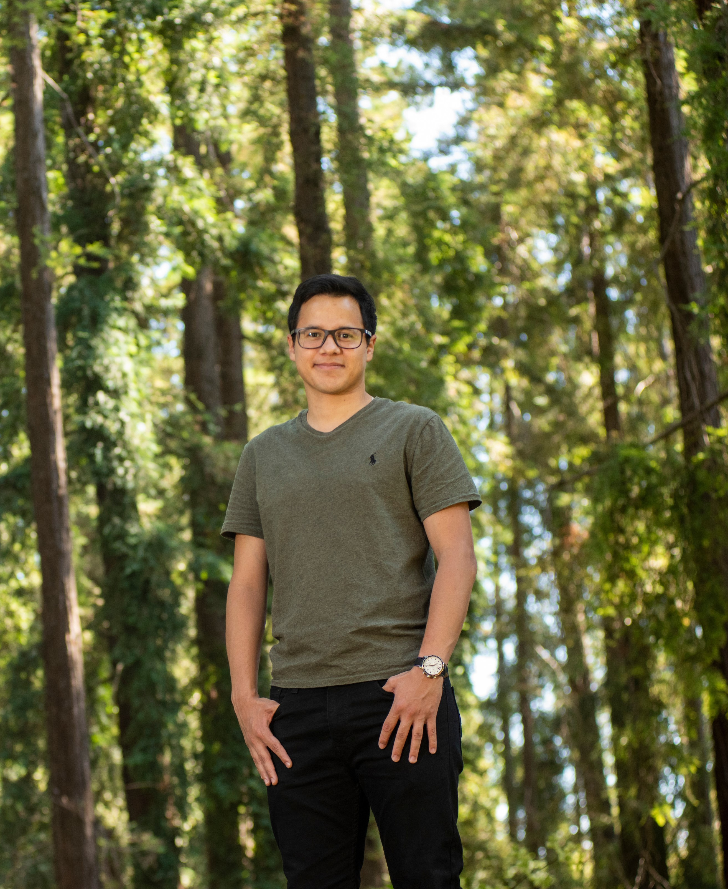

About Me

I am a Ph.D. student at the University of Wisconsin, Madison working with Dr. Daniel Wright , Dr. Steven Loheide, and Dr. Caroyln Voter, where we are investigating the impact of green infrastructure on local climate within coastal communities. I have an M.S. from the University of California, Davis, where I worked with Dr. Holly Oldroyd on land-atmosphere interactions in the California's Central Valley. From 2013-2017, I was an undergraduate student at the University of Nevada, Reno, where I worked with Dr. Heather Holmes in the ATAQ Lab.
My research interests are tied to the interactions between the atmosphere and the earth’s surface in both Urban and Rural areas, and how changes in these regions interact to change the local hydrology and hydroclimatology. To investiagte these questions, I use high-performance computing and synthesize diverse data sets that span near surface measurements of surface turbulent fluxes, planetary boundary layer measurements from airplane campaigns, atmospheric reanalysis products, large datasets from in-situ observations. Through pursuing answers to these questions, it is the hope that a more sustainable future can be achieved.
Outside of research, I am a lifelong learner. I strive to find the best ways to communicate science to students and the general public. I love to learn new coding techniques in order to better persue my research. I also work tirelessly to learn new skills, such as snowboaring, to enjoy the outdoors and am currently perfecting how to make pizza from home.